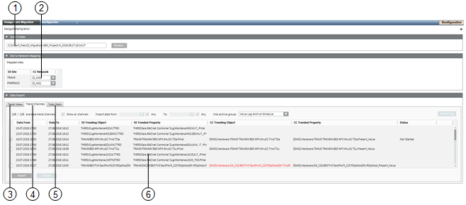
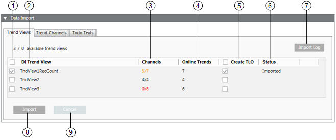
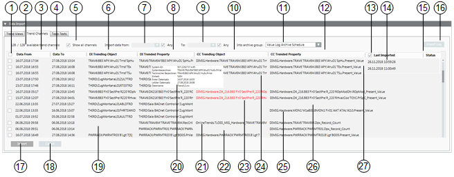
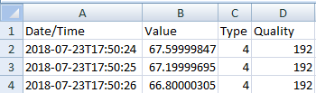
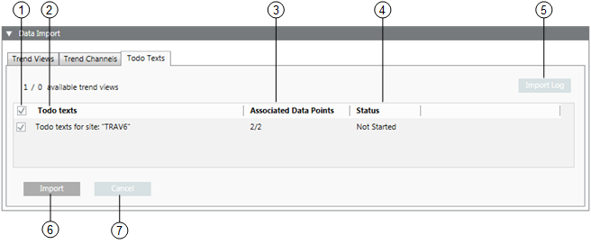

Desigo Insight Data Migration
Existing data can be migrated to Desigo CC with Desigo Insight. Migrate the data as close as possible to commissioning Desigo CC to avoid data inconsistencies on trend views or trend channels. Recorded trend data is no lost if Desigo CC is commissioned first and the migration packages for trend data are then updated.
Overview of User Interface for Desigo Data Migration

Overview | |
| Description |
1 | Path to the superposed migration package folder. |
2 | Assignment list of Desigo Insight site to Desigo CC Network. |
3 | Migration register for trend views. |
4 | Migration register for trend channels. |
5 | Migration register for Todo texts. |
6 | Information pane for the selected register. |
User Interface for Trend View

Overview | |
| Description |
1 | The trend views on selected check boxes are migrated. |
2 | Displays the Desigo Insight trend view description. |
3 | Displays the applicable trend channels for the corresponding trend views: 5/7 : Only three of seven channels were able to be assigned; 4/4 : All channels were able to be assigned; 0/6 : No channel was able to be assigned. Check whether you selected the corresponding sites. |
4 | The number of existing online trends in the corresponding trend view. |
5 | The corresponding number of online trend objects is created when the check box is selected. |
6 | Displays the status of the migration process. |
7 | Displays an overview of imported data. |
8 | Migrates all selected trend views. |
9 | Immediately aborts the data migration. Previously migrated data is deleted retroactively. |
User Interface for Trend Channels

Overview | |
| Description |
1 | The trend channels on selected check boxes are migrated. |
2 | The right number displays the found trend channels. The left number displays the automatically assigned trend channels. |
3 | Displays the date and time of the first data value. |
4 | Displays the date and time of the last data value. |
5 | On a selected check box, Desigo Insight trend objects are assigned displayed that are not assigned to a Desigo CC offline trendlog object. |
6 | Displays the name of the Desigo Insight trendlog object. |
7 | Start date for the first data value for import. |
8 | Displays the Desigo Insight property trended on the associated Desigo Insight trendlog object. |
9 | End date for the last data value for import. |
10 | Displays the name of the Desigo CC trendlog object. Tooltip displays the trendlog object type (Simple or Multiple). |
11 | Displays the list of available archive groups. |
12 | Displays the Desigo Insight property trended on the associated Desigo CC trendlog object. |
13 | Displays the last imported data set. Clear the check box to see only data sets that have not yet been imported. The list of migrated data sets becomes continuously shorter. |
14 | Displays the date of last import. The tooltip can displays the time range of the imported data. |
15 | Displays the State as well as the amount of migrated data in the Desigo CC history database. |
16 | Displays an overview of imported data. |
17 | Migrates all selected trend channels. |
18 | Aborts data migration. Previously migrated data is deleted retroactively. |
19 | It is online trend data if column DI trendlog object is empty and DI trended property has a data point reference. |
20 | The tooltip DI Trended Property displays the file name Trend01.csv. This file includes all data saved on a trend series.  Go to the Desigo Insight migration files in Windows Explorer and open the Data>Trend folder. |
21 | Displays an online trendlog object after migration to Desigo CC . |
22 | An empty line on an online trend means that no online trendlog object has been created. |
23 | A red entry means that the Desigo CC offline trendlog object does not match the Desigo Insight offline trendlog object. |
24 | An entry with # could not be assigned. It is possible that the Desigo Insight offline trendlog object has multiple references to different data points during operation. |
25 | The CC trended property is available. The CC trendlog object is however missing. The data is saved in this case on the data point property. |
26 | Both the CC Online trendlog object as well as the CC trended property. A virtual data point must be created for the corresponding type if Desigo Insight data is still needed to tracking purposes. |
27 | The data between Desigo Insight and Desigo CC are correctly assigned if the information in all four columns is black. |
User Interface Todo texts

Overview | |
| Description |
1 | Selecting the check box migrates the Todo texts from this Desigo Insight site. |
2 | Displays the Desigo Insight sites. |
3 | The left value displays the number of linked data points. The right value displays the found Todo texts. |
4 | Displays the status of the migration process. |
5 | Displays an overview of imported data. |
6 | Migrate all selected Todo texts. |
7 | Immediately aborts the data migration. Previously migrated data is deleted retroactively. |